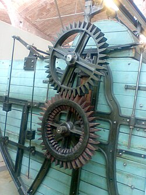

Engranajes
Un engranaje es un tipo de mecanismo que tiene dos o más ruedas dentadas, que se utiliza para transmitir potencia mecánica de un componente a otro.[] Si las dos ruedas son de distinto tamaño, la mayor se denomina corona y la menor piñón.[] Un engranaje sirve para transmitir movimiento circular mediante
el contacto de ruedas dentadas.Una de las aplicaciones más importantes
de los engranajes es la transmisión del movimiento desde el eje de una fuente de energía, como puede ser un motor de combustión interna o un motor eléctrico,
hasta otro eje situado a cierta distancia y que ha de realizar un
trabajo. De manera que una de las ruedas está conectada por la fuente de energía y
es conocida como rueda motriz y la otra está conectada al eje que debe
recibir el movimiento del eje motor y que se denomina rueda conducida.[ Si
el sistema está compuesto de más de un par de ruedas dentadas, se
denomina 'tren'.
